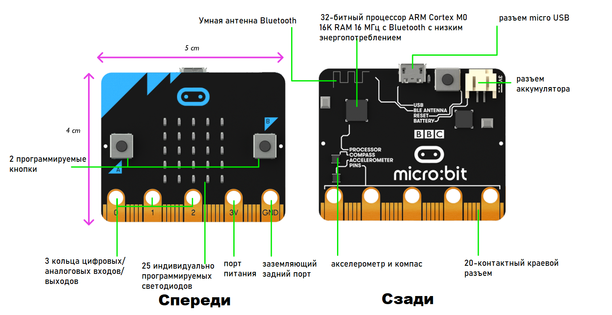
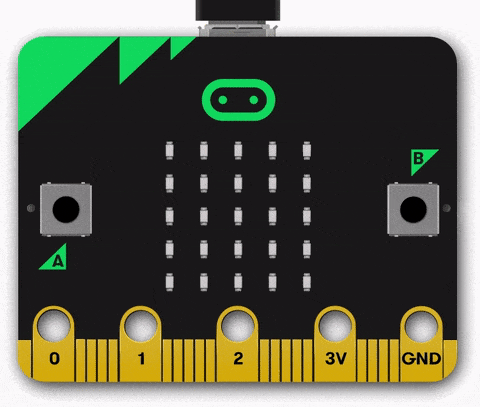
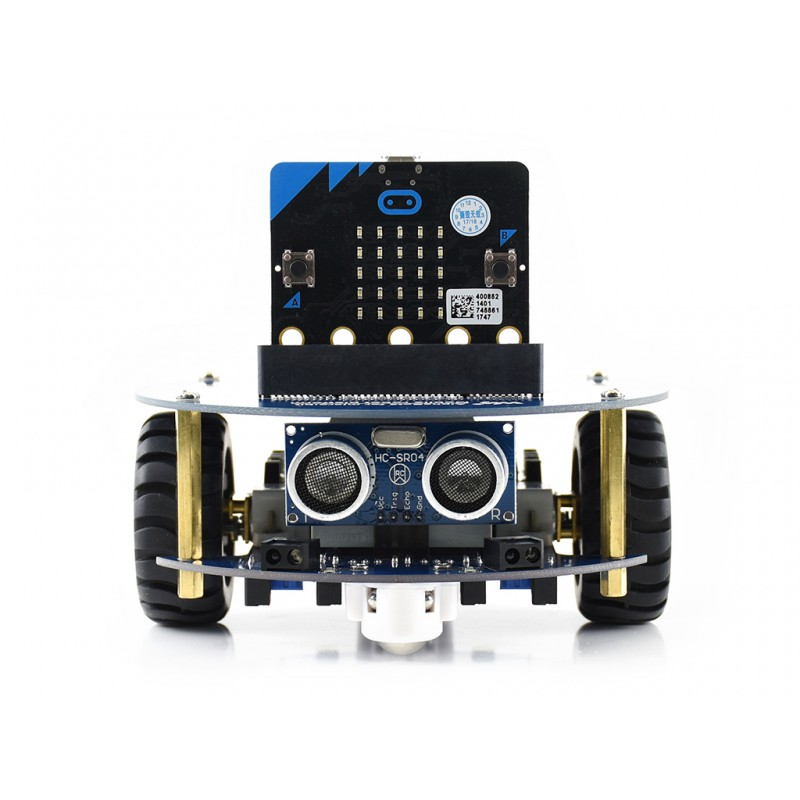

Micro:bit
Micro:bit - одноплатный компьютер, разработанный по инициативе корпорации BBC совместно с крупными технологическими компаниями, сообществами и образовательными организациями для предоставления детям интересного способа изучения программирования и стимулирования технического творчества.

Немного о проекте

- Проект Би-би-си включал бесплатную раздачу микро:бит всем британским школьникам 7-ого года обучения (11-12 лет).
- Поступление микро:бит в школы началось в 2016 г., британским школьникам передан 1 миллион плат.
- По состоянию на октябрь 2018 г., микро:бит распространён в 50 странах мира общим числом 2 миллиона экземпляров.
Внешний вид micro:bit

Возможности

На борту micro:bit уже находятся две программируемые кнопки, «экран» в виде матрицы из красных 25 светодиодов, датчики ускорения и температуры. Это позволяет начинающему разработчику быстро реализовать простенький гаджет или приступить к учебному курсу, ведь всё необходимое уже под рукой.
Плата умеет обмениваться данными по Bluetooth со смартфонами и планшетами на базе Android и iOS. Результаты работы программы — например, показания встроенных датчиков — можно мгновенно вывести на светодиодную матрицу или наблюдать в мобильном приложении.
Программирование micro:bit

MakeCode - это веб-приложение, позволяющее создавать программы для микро:бит онлайн.
MakeCode можно также использовать офлайн, установив приложение в операционной системе Windows или Mac OS. По состоянию на март 2020 г. офлайн-приложение находилось в стадии разработки и распространялось как предрелизная версия.
Среда MakeCode для микро:бит содержит эмулятор микро:бит, что позволяет тестировать программу для микро:бит без физического устройства.
Наряду с визуальным программированием блоками, среда MakeCode позволяет программировать на текстовых языках JavaScript и Python.